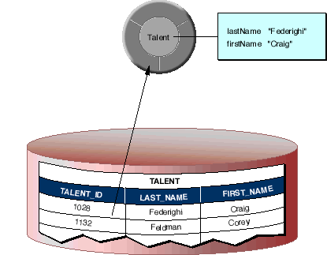
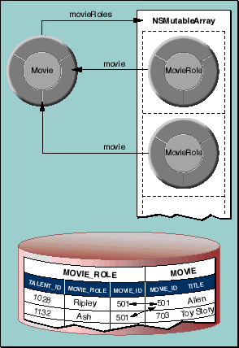
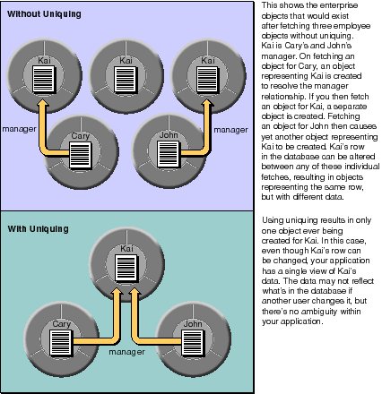
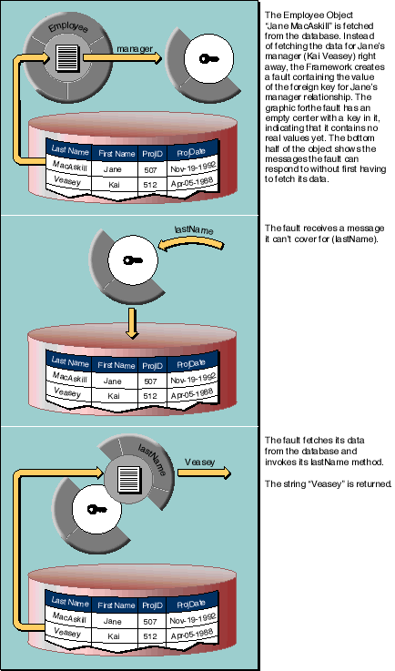

Table of Contents
Table of Contents  Next Section
Table of Contents
Next Section
Table of Contents  Previous Section
Previous Section

Figure 2. Mapping Between an Enterprise Object Class and a Single Table

Figure 3. Mapping Relationships
Uniquing
In marrying relational databases to object-oriented programming, one of the key requirements is that a row in the database be associated with only one enterprise object in a given context in your application. Enterprise Objects Framework maintains the mapping of each enterprise object to its corresponding database row, and uses this information to ensure that your object graph does not have two (possibly inconsistent) objects for the same database row. Uniquing of enterprise objects, as this process is called, limits memory usage and allows you to know with confidence that the object you're interacting with represents the true state of its associated row as it was last fetched into the object graph.

Figure 4. Uniquing of Enterprise Objects
Resolution of Relationships and Faulting
When the Framework fetches an object, it creates objects representing the destinations of the fetched object's relationships. For example, if you fetch an employee object, you can ask for its manager and immediately receive an object; you don't have to get the manager's employee ID from the object you just fetched and fetch the manager yourself.
The framework allows you to tune relationship resolution by prefetching relationships and batch faulting. For more information on these features, see the chapter "Answers to Common Design Questions". For more information on the general faulting mechanism, see the chapter "Behind the Scenes".

Figure 5. Resolution of a Fault
Table of Contents Next Section